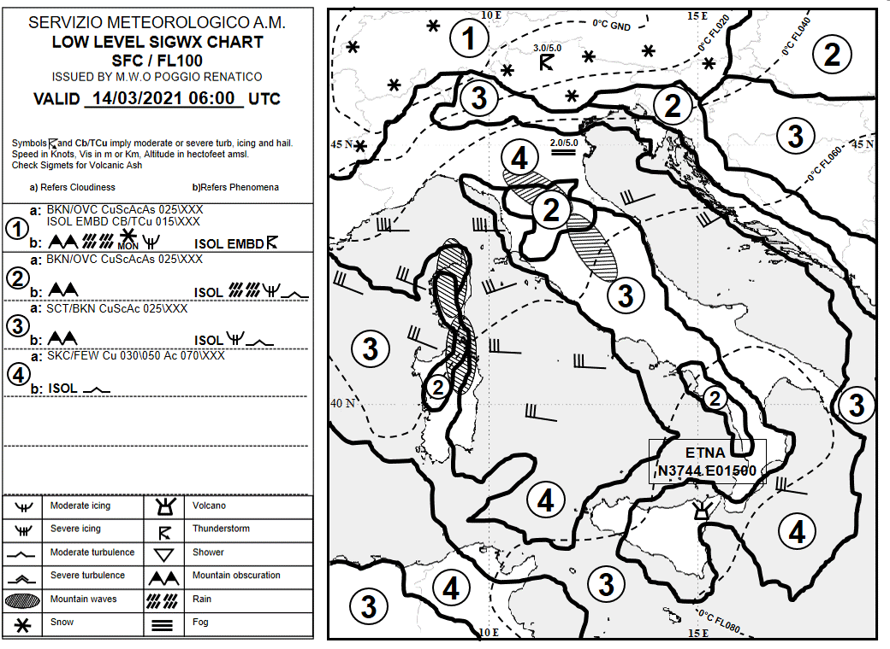
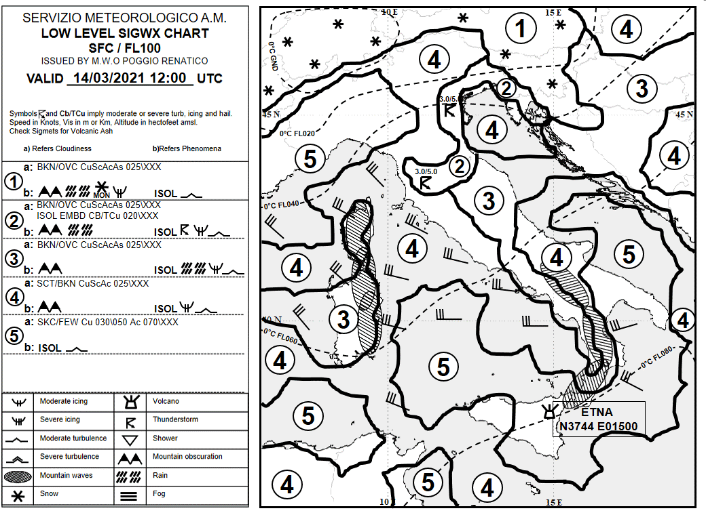
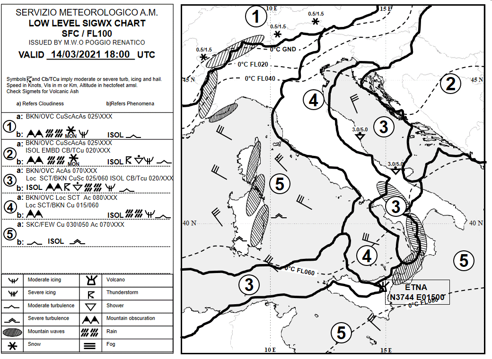
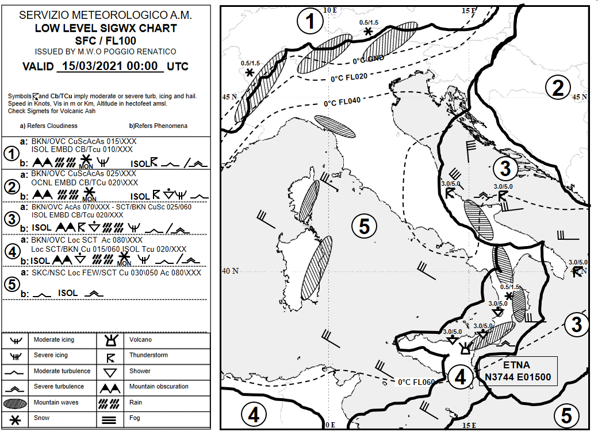

SWLL Mobile
In questa pagina sono riportate le carte SWLL dal
dell'A.M.
aggiornate ogni 6 ore e riportate per una facile consultazione da smartphone.
Validità: 14-03-2021 06:00 UTC

Validità: 14-03-2021 12:00 UTC

CARTA ATTUALMENTE VALIDA
Validità: 14-03-2021 18:00 UTC

Validità: 15-03-2021 00:00 UTC
